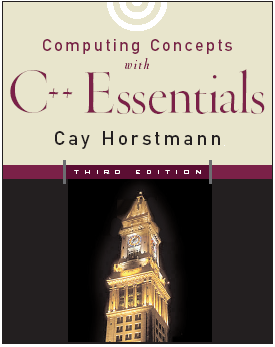

161 40000 45 100 127 11280
mov 40000, %eax sub 100, %eax jg 11280
if (int_rate > 100) message_box("Interest rate error");
if (int_rate > 100) message_box("Interest rate error");if int_rate > 100 then message_box('Interest rate error'); |
Syntax 1.1 : Simple Program header files
using namespace std;
int main()
{
statements
return 0;
}
 |
cot << "Hello, World!\n"; cout << "Hello, World!\";
cout << "Hell, World\n";


You put $10,000 into a bank account that earns 5% interest per year. How many years does it take for the account balance to be double the original?
|
After Year
|
Balance
|
|
0
|
$10,000
|